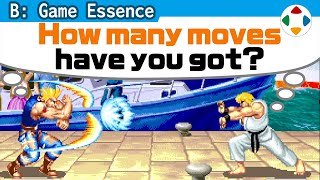
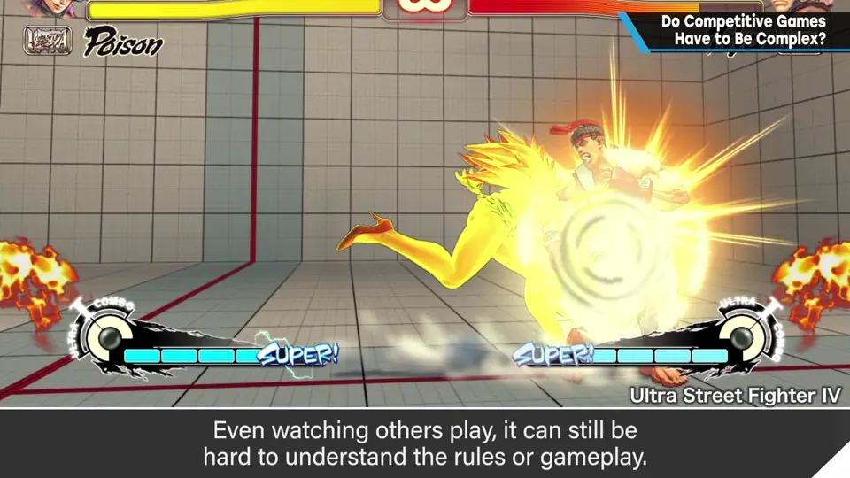
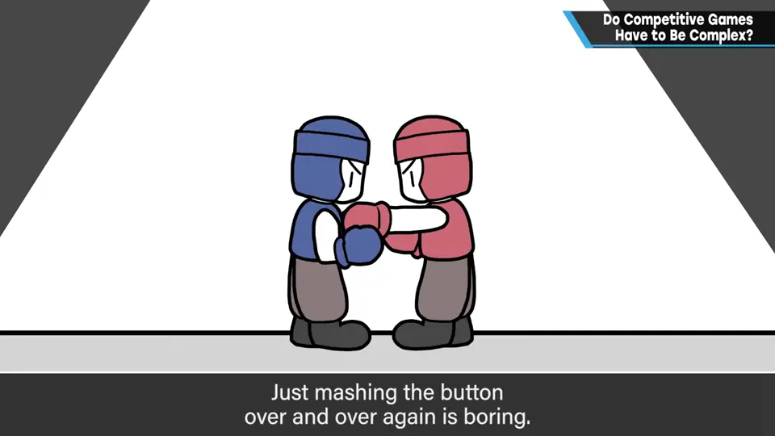
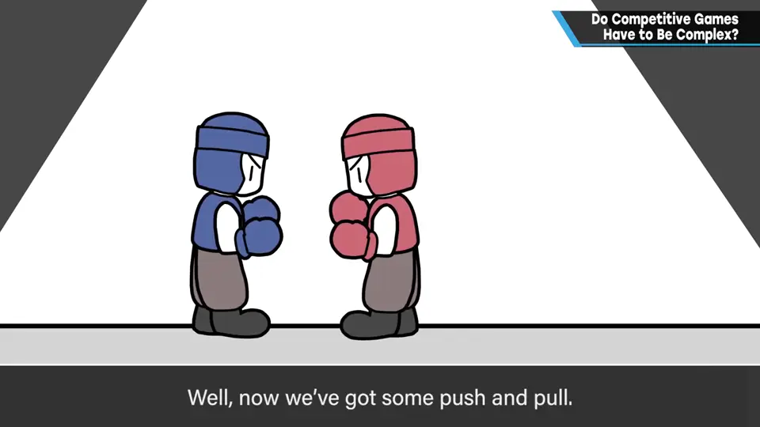
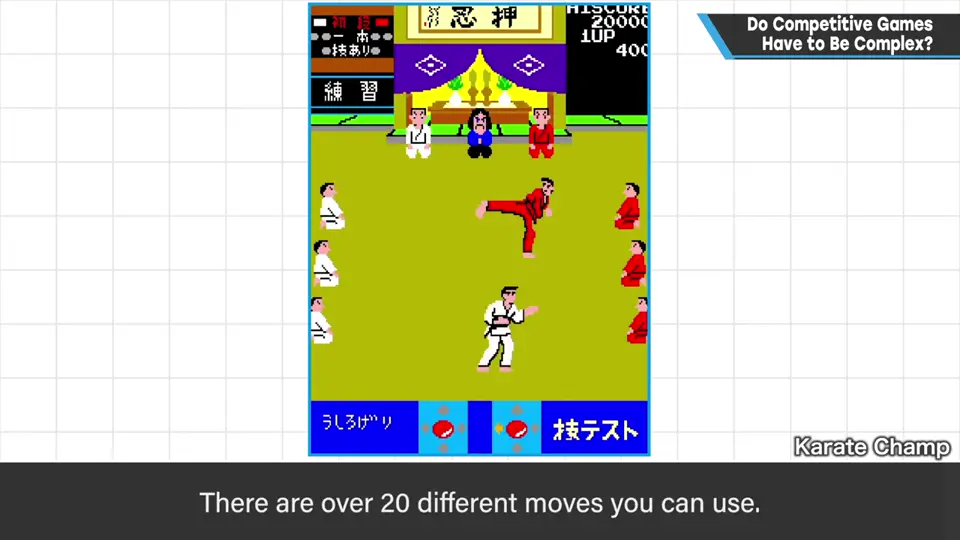
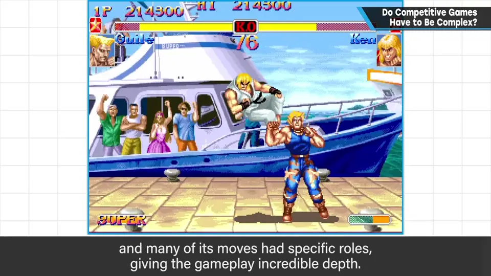
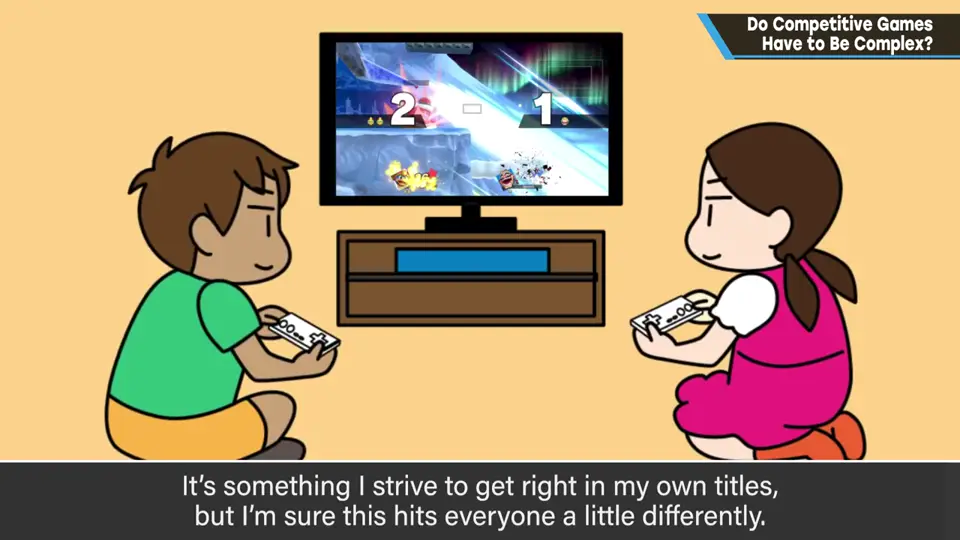
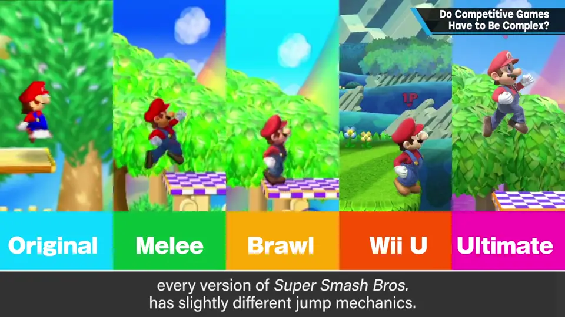

速览
如今跳进对战游戏需要不少勇气，不少人觉得太复杂、跟不上，看别人玩也不懂规则和意思。那对战游戏不能做得简单吗？例如对战格斗游戏中，不能走路、只能出一种拳——无从博弈，只是连打按钮，很无聊。加入走路，就有了「间距」的概念，但还不够；能出拳和踢，踢的破绽比拳大、打空就能被反击，开始有点博弈；能跳、能防御、能投技——这些规格让游戏越来越深。把《Mario Bros.》当对战游戏看也有趣，但很难一直玩下去。对战格斗刚出现时，至少比之前的街机游戏能做的事多得多、显得深奥：之前的街机大多一个按钮一个动作，最多加蹲下攻击、跳跃攻击。早期街机对战格斗有 1984 年的《対戦空手道》（Karate Champ 对战版），竟有 20 种以上招式；1987 年的《街头霸王》出招太难，光操作就费尽全力，很难感到博弈——但那时招式已经很多。点燃格斗游戏的当然是《街头霸王 II》：设定了扎实的博弈、给众多招式恰当分工，就变得极其深奥。那么游戏只要追求深度就好吗？当然不是：能休闲地享受也重要；但如果要经得起玩几百次，多少都需要相应的系统深度。又广又深的分寸很难，这也是樱井制作的目标，但感受因人而异。在历史反复的类型里，偶尔会有不怎么产生博弈却规则复杂的情况；对制作和游玩都习惯了就容易当作理所当然，所以樱井推荐每次开始开发时都重新审视系统和规则——他每次也会重审，所以《大乱斗》的跳跃规格每作都不同。要素变复杂某种程度上无可奈何，但需要「不把理所当然当理所当然」的姿态。
1. 对战游戏不能简单吗？ 0:03
如今跳进对战游戏需要不少勇气：不少人觉得游戏太复杂跟不上，观战也不懂规则和意义。那么，对战游戏不能做得简单吗？

以对战格斗为例，一步步加规格：
- 不能走、只能出一种拳：无从博弈，只是连打按钮，很无聊；
- 加入走路：有了「间距」的概念，但还远远不够；
- 能出拳和踢，踢的破绽比拳大、打空就会被反击：开始有点博弈；
- 能跳、能防御、能投技……这些规格让游戏越来越深。


把《Mario Bros.》当作对战游戏看很有趣，但很难一直玩下去。
2. 格斗游戏的历史 1:16
对战格斗游戏出现时，至少比之前的街机游戏能做的事多得多，显得很深奥。之前的街机大多一个按钮一个动作，最多再加蹲下攻击或跳跃攻击。
- 1984 年的《対戦空手道》（Karate Champ 对战版）：竟有 20 种以上的招式；
- 1987 年的《街头霸王》：出招太难，光是操作就费尽全力，很难感受到博弈——但这时招式已经很多；
- 点燃格斗游戏热潮的当然是《街头霸王 II》：设定了扎实的博弈、给众多招式恰当地分配角色，就变得极其深奥。


3. 深度与广度的分寸 2:45
那游戏只要追求深度就好了吗？当然不是。能休闲地享受也很重要；但如果要经得起玩几百次，多少都需要能支撑它的系统深度。又广又深的分寸很难拿捏，这也是樱井制作的目标，但感受仍因人而异。


在历史反复的类型中，偶尔会有不怎么产生博弈、规则却很复杂的情况。对制作和游玩都习惯了，就容易当作理所当然。
自测题
1. 樱井如何用一步步加规格说明对战游戏需要的复杂度？
只有一种拳：只能连打，无博弈；加走路有了间距；拳和踢有破绽差、打空会被反击才开始博弈；跳、防、投让游戏越来越深。 0:22
2. 《街头霸王 II》为什么点燃了格斗游戏？
设定了扎实的博弈，并给众多招式恰当地分配角色，变得极其深奥（此前《街霸》招式虽多但太难出）。 2:30
3. 樱井推荐开发者每次开发都做什么？
重新审视系统和规则，不把理所当然当作理所当然（例：《大乱斗》每作的跳跃规格都不同）。 3:20